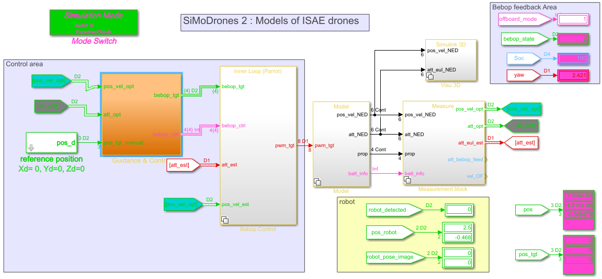

UAVs
Guidance and Navigation software design for a quadcopter

Introduction
Implementing control laws and higher-level mission control for drones requires working in a simulation environment but this test alone is not sufficient: real word testing is also needed. This was the core of this project during which we had to both simulate and make real tests on a Bebop drone. Middleware softwares such as ROS made the transition easier by enabling Wi-fi connection between different computers together with the drone. Goals
Given a simulation environment, we had to build outer loop controllers (position controllers) to respect performance specifications on a drone preparatorily stabilized with cascade control. We tested those controllers by giving a set of waypoints for the drone to follow. The second part of this course was to implement a fully autonomous chasing-off-intruder mission.Implementing position controllers
Modal control method
We used a modal control method on each axis to get the specified performance. In order not to work on the heavy simulation environment every time, we worked on simplified models that we derived using a behavioral approach on the open-loop outputs of the whole system.Tests and simulations
For the z-axis, we were able to appreciate the limits of our approximation as the step response slightly differed from the simplified model we used to derive the controller. However, the step response still respected the specifications we were given so the controller was validated.Waypoints
We used Stateflow charts to test the behavior of the drone to a predifined set of waypoints. We connected the output of the stateflow chart to the controller inputs that we just had implemented. Below is a 3D display of the resulting simulation along with a xy display.
Pursuit
The next step was to implement a fully autonomous chasing-off intruder mission. This mission was divided in finve parts : take-off, tracking, following, home base return, landing.
Tracking
For the tracking part, the drone knew the target's position but needed to anticipate the target moves so that he could move accordingly. To perform this task, we used a MDP (Markov Decision Process) approach.